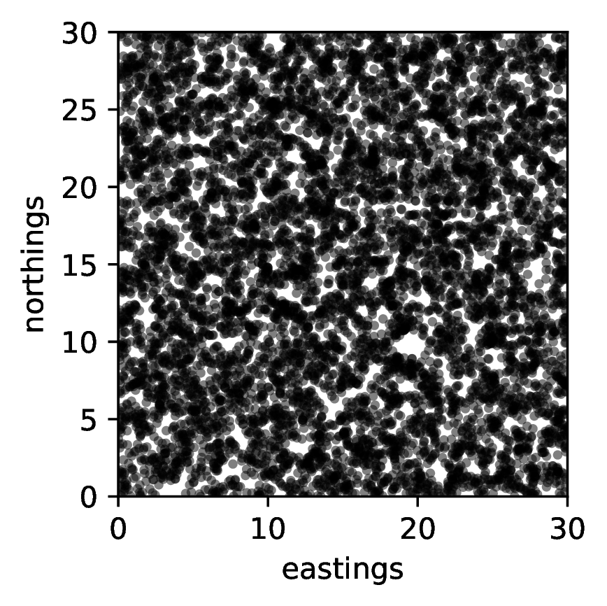
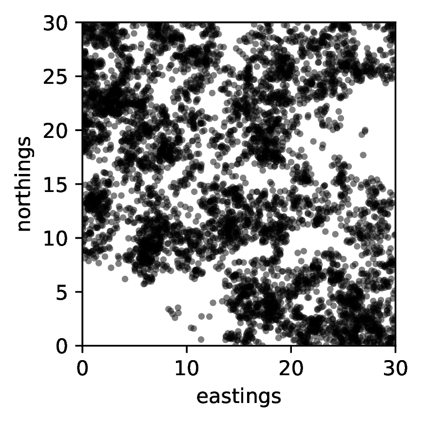

Forwards and backwards in spatially heterogeneous populations
Peter Ralph
Probability Seminar
UC Berkeley // 9 October
2024
Outline
Joint work with:
- Alison Etheridge (Oxford)
- Tom Kurtz (Madison)
- Ian Letter (ex-Oxford)
- Terence Tsui (Warwick)

UO is located on the traditional indigenous homeland of the Kalapuya people. Kalapuya people were dispossessed of their indigenous homeland by the United States government and forcibly removed. Today, Kalapuya descendants are primarily citizens of the Confederated Tribes of Grand Ronde and the Confederated Tribes of Siletz Indians, and continue to make important contributions to their communities, to the UO, to Oregon, and to the world.
Motivation
Motivating question
What can we deduce about the history of a population from patterns of genetic variation that we observe today?
- genetic differences produced by mutations
- which accumulate slowly since common anestors
What can we deduce about the history of a population from the genealogies that we observe today?
… which are now inferrable.
The world is not flat
homogeneous
How we usually model it:
“Over large spatial and temporal scales local details should wash out”
… but will they?
A model
A model, based on “interacting branching processes”
\[\eta(x) = \text{population at (or close to) } x\]
- A juvenile is born per capita rate \(\gamma(x, \eta(x))\)
- Dispersal distribution \(q(x, dy)\) (Gaussian)
- Establishment probability \(r(y, \eta(y))\)
- Death of mature individuals rate \(\mu(x, \eta(x))\)
Can choose parameters to achieve stability.
We only track mature individuals.
A note of caution
Gilia Patterson
death: \(\mu = 0.3\) per generation
establishment: \(r = 0.7\)
dispersal: Gaussian with SD \(\sigma\)
local density: in circle of radius \(\epsilon\)
reproduction: with \(K=2\), \(\lambda=3\), \[ \gamma = \frac{\lambda}{1 + \text{(local density)}/K} \]
non-spatial equilibrium density: \[ K \left( \frac{\lambda}{1 - r} - 1 \right) .\]

SLiM code at github.com/petrelharp/berkeley-oct-2024
Large dispersal distance
- dispersal distance \(\sigma = 3\)
- interaction distance \(\epsilon = 1\)
- mean # offspring \(\propto (1 + \text{(density)} / K)^{-1}\)
Small dispersal distance
- dispersal distance \(\sigma = 0.2\)
- interaction distance \(\epsilon = 1\)
- mean # offspring \(\propto (1 + \text{(density)} / K)^{-1}\)
Low dispersal distance copamred to distance over which negatively influenced by presence of neighbors can lead to strong clumping - true even in deterministic model!
Characterising the model
Local density
Birth-death process with dynamics:
- A juvenile is born per capita rate \(\gamma(x, \eta(x))\)
- Dispersal distribution \(q(x, dy)\) (Gaussian)
- Establishment probability \(r(y, \eta(y))\)
- Death of mature individuals rate \(\mu(x, \eta(x))\)
Think of population as a point measure, with atoms of mass \(1/N\), and write \[ \langle f, \eta \rangle = \frac{1}{N} \sum f(X_i) = \int f(x) \eta(dx) . \]
Rates depend on local density near \(x\): \[ \gamma(x, \eta(x)) := \gamma(x, \rho_\gamma * \eta(x)); \qquad \rho_\gamma * \eta(x) = \int \rho_\gamma(x-y) \eta(dy) .\]
There are three interaction kernels, \(\rho_r\), \(\rho_\gamma\), and \(\rho_\mu\), which need not be the same.
Scaling the model – parameters \(N\), \(\theta\)
Birth-death process with dynamics:
- A juvenile is born per capita rate \({\color{red}\theta}\gamma(x, \eta(x))\)
- Dispersal distribution \(q_{\color{red}\theta}(x, dy)\) (Gaussian mean and variance order \(1/\theta\))
- (Instantaneous) establishment probability \(r(y, \eta(y))\)
- Death of mature individuals rate \(\mu_{\color{red}\theta}(x, \eta(x))\)
Assume: \[\int \theta\left( r(z, \eta) f(z) - r(x,\eta)f(x) \right) q_\theta(x, dz) \stackrel{\theta\to\infty}{\longrightarrow} \Delta\left(r(\cdot, \eta) f(\cdot)\right)(x) \]
\[ \theta\left( r(z, \eta) \gamma(x, \eta) - \mu_\theta(x, \eta)\right) = F(x,\eta)\]
(Roughly, \(r\) sufficiently smooth and net per capita growth rate \(\propto 1/\theta\).)
(See paper for more general case: an operator instead of \(\Delta\).)
How do things change, locally? \(\langle f, \eta \rangle = \frac{1}{N} f(X_i) = \int f(x) \eta(dx)\)
Individual at \(x\) gives birth to a single mature offspring at \(z\) at rate \[ \theta \gamma(x, \eta) r(z, \eta) q_\theta(x,dz) \qquad \text{increment} \langle f,\eta \rangle \text{by} \frac{1}{N} f(z) .\]
Individual at \(x\) dies at rate \(\theta\mu_\theta(x,\eta)\) increment \(\langle f,\eta \rangle\) by \(-\frac{1}{N} f(x)\)
\[\begin{aligned} \frac{d}{dt}\mathbb{E}\left[\langle f, \eta_t\rangle \big| \eta_0 = \eta\right] \big|_{t=0} \end{aligned}\]
\[\begin{aligned} &\qquad = \theta \int \int \color{red}{\frac{1}{N}} f(z) r(z, \eta) q_\theta(x, dz) \gamma(x, \eta) \color{red}{N} \eta(dx) \\ &\qquad \qquad \qquad - \theta \int \color{red}{\frac{1}{N}} f(x) \mu_\theta(x, \eta) \color{red}{N} \eta(dx) . \end{aligned}\]
\[\begin{aligned} & = \theta \int \int f(z) r(z, \eta) q_\theta(x, dz)\gamma(x, \eta) \eta(dx) - \theta \int f(x) \mu_\theta(x, \eta)\eta(dx) \\ &\vphantom{\int} \end{aligned}\]
\[\begin{aligned} &= \int \left( \int \theta(f(z) r(z, \eta) - f(x) r(x, \eta)) q_\theta(x,dz)\right) \gamma(x, \eta) \eta(dx) \\ &\qquad \qquad {}+ \int \int f(x) \theta \left(r(x,\eta)\gamma(x, \eta) - \mu_\theta(x,\eta)\right) \eta(dx) . \hspace{5em} \end{aligned}\]
using \(\int q_\theta(x,dz) = 1\)
\[ \stackrel{\theta \to \infty}{\longrightarrow} \int \gamma(x,\eta) \Delta(f(\cdot)r(\cdot,\eta))(x) \eta(dx) + \int f(x) F(x,\eta) \eta(dx) \]
Quadratic variation
Individual at \(x\) gives birth to single mature offspring at \(z\) at rate \(\theta \gamma(x,\eta)r(z,\eta)q_\theta(x,dz)\): increment \(\langle f, \eta \rangle = \frac{1}{N} f(z)\)
Individual at \(x\) dies at rate \(\theta \mu_\theta(x,\eta)\): increment \(\langle f, \eta \rangle = -\frac{1}{N} f(x)\)
\[\begin{aligned} &N \theta \big\{ \big\langle \int \frac{1}{N^2} f^2(z) r(z,\eta) q_\theta(x,dz), \eta(dx) \big\rangle \\&\qquad \qquad {} + \big\langle \frac{1}{N^2} f^2(z) \mu_\theta(x,\eta), \eta(dx) \big\rangle \big\} \\&= \frac{\theta}{N} \big\langle \gamma(x,\eta) \int f^2(z) r(z,\eta) q_\theta(x,dz) + f^2(x) \mu_\theta(x,\eta), \eta(dx) \big\rangle \end{aligned}\]
\[ \int f^2(z) r(z,\eta) q_\theta(x,dz) \to f^2(x) r(x,\eta), \qquad \mu_\theta = r\gamma - \frac{1}{\theta}F \to r \gamma \]
\(\stackrel{\theta\to\infty}{\longrightarrow} \alpha \langle 2 r(x,\eta) \gamma(x,\eta) f^2(x), \eta(dx) \rangle\) where \(\alpha := \lim \frac{\theta}{N}\).
small / large \(\alpha\):
 
Martingale characterization of limit
\[\begin{aligned} & \langle f(x), \eta_t(dx)\rangle - \langle f(x), \eta_0(dx)\rangle \\&\qquad {} - \int_0^t \big\langle \gamma(x,\eta_s)\Delta\left(f(\cdot)r(\cdot,\eta_s)\right)(x) + F(x,\eta_s)f(x), \eta_s(dx) \big\rangle ds \end{aligned}\] is a martingale, \(M_f(\cdot)\), with \[ \langle M_f \rangle_t = \alpha \int_0^t \big \langle 2 r(x,\eta_s)\gamma(x,\eta_s) f^2(x), \eta_s(x) \big \rangle ds . \]
- \(\alpha=0\): non-local PDE
- can also recover ‘local’ PDEs \[\partial_t \eta = r \Delta(\gamma \eta) + F\eta\]
- \(\alpha > 0\): nonlinear superprocess
e.g., \(\gamma\equiv1\), \(r\equiv1\), \(F=1-h*\eta\), (diffusion limit of) Bolker-Pacala model: spatial branching process; reproductive success decreases in crowded regions.
Assumptions
Assume
\[\int \theta(f(z) r(z, \eta) - f(x) r(x, \eta)) q_\theta(x,dz) \stackrel{\theta \to \infty}{\longrightarrow} \Delta(f(\cdot)r(\cdot,\eta))(x)\]
\[\theta\left( r(x,\eta) \gamma(x,\eta) - \mu_\theta(x,\eta) \right) = F(x,\eta)\]
per capita birth rate of juveniles, \(\gamma\), bounded above
‘approximate excess growth rate’, \(F\), bounded above but not necessarily below (logistic growth)
instead of \(\Delta\) can have any uniformly elliptic second order differential operator
Remarks
Classical models emerge as special cases of the scaling limits
- Fisher-KPP and Allen-Cahn equations; Bolker-Pacala model; spatial branching processes
The two stages of reproduction can result in a nonlinear diffusion even in the scaling limit
Information about population history recovered from patterns of genetic variation. Using a lookdown construction, we retain information about genealogies in the scaling limit.
Ancestral lineages
Consider a single ancestral lineage \[L_t = (\text{location of the genetic ancestor time $t$ ago}).\]
and for this talk, work in the classical PDE limit.
Ancestral lineages
Suppose population has a stationary density \(w(x)\). Then \[ dL_t = r(L_t) \gamma(L_t) 2 \nabla \log(w\gamma)(L_t) dt + \sqrt{r(L_t)\gamma(L_t)} dB_t\]
- Lineage speed determined by rate of production of mature offspring (\(r\gamma\)), \(\approx\) death,
- and drawn to regions of high total fecundity
Lineage motion not uniquely determined by population denisty: \(w\) solves \[ r\Delta(\gamma w) + (r\gamma - \mu) w = 0, \]
multiply \(r\) and \(\mu\) by \(\lambda\): - same stationary density, but - lineages spend more time where \(\lambda < 1\): those areas have higher long-term fitness.
Reaction-diffusion equations and range expansion (\(d=1\))
Fisher-KPP
\[ \frac{\partial u}{\partial t} = \frac{\partial^2 u}{\partial x^2} + u (1-u) \]
\(\gamma \equiv 1\), \(r \equiv 1\), \(F(x,m) = 1 - m\).
Traveling wave solution \(\varphi(t,x) = w(x - 2t)\), so lineage moves relative to the wave front as \[\begin{aligned} dL_t &= 2 \nabla \log(w)(L_t) dt + 2 dt + dB_t \end{aligned}\]
\(w(x) \sim e^{-x}\), so lineages stay in the wave front (where numbers are small and the scaling limit breaks down)
Allen-Cahn
\[ \frac{\partial u}{\partial t} = \frac{\partial^2 u}{\partial x^2} + u (1-u) \color{blue}{(2u - 1 + s)} \qquad \color{blue}{s \in (0, 2)}\]
Now \(F(x,m) = (1 - m)(m - \rho)\), bistable.
Traveling wave solution \(\varphi(t,x) = w(x - st)\) with \(w(x) = (1 + e^x)^{-1}\), so lineage moves relative to the wave front as \[\begin{aligned} dL_t &= \left(s - 2 \frac{e^{L_t}}{1 + e^{L_t}}\right) dt + dB_t , \end{aligned}\]
with stationary distribution \(\propto e^{sx}(1 + e^x)^{-2}\).
A less classical example \(\gamma \propto\) pop density, logistic control
\[ \frac{\partial u}{\partial t} = \frac{\partial^2}{\partial x^2} (u^2) + u (1-u) , \qquad \phantom{u(t,x) = \left(1 - \exp\left(\frac{1}{2}(x-t)\right)\right)_+} \]
\[ \frac{\partial u}{\partial t} = \frac{\partial^2}{\partial x^2} (u^2) + u (1-u) , \qquad \color{blue}{u(t,x) = \left(1 - \exp\left(\frac{1}{2}(x-t)\right)\right)_+} \]
“Effective” density dependent dispersal
- Ancestral lineage has stationary distribution \(\propto e^x (1 - e^{x/2})\) for \(x < 0\)
- With noise can expect quite different genealogy from F-KPP.
Closing
Remarks
- In spite of complexity, some mathematical tractability
- A trace of the two-step reproduction mechanisms persists over large temporal and spatial scales
- Readily simulated in SLiM
- Readily extended
noodling
Will they?
\[\int_0^\infty e^{ix} dx\]